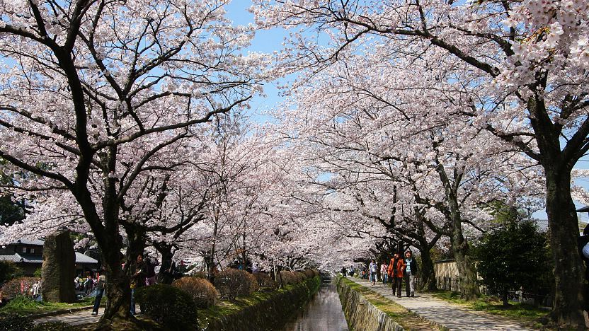

Cherry Blossoms are now in season .
Information: UW news
Information: Inside Kyoto
Another image of Philosopher's path

| Period | Subject | Teacher | Room |
|---|---|---|---|
| 1 | Health CTE | Mrs. Hampson | NE 137 |
| 2 | Honors Biology | Mr. Caesar | SE 109 |
| 3 | Concert Orchesyta | Mrs. Stevenson | NE 122 |
| 4 | Honors English | Mrs. Ginder | SE 204 |
| 5 | Computer Science Principles | Mr. Chan | SE 224 |
| 6 | Honors Geometry | Mr. Taylor | NW 227 |